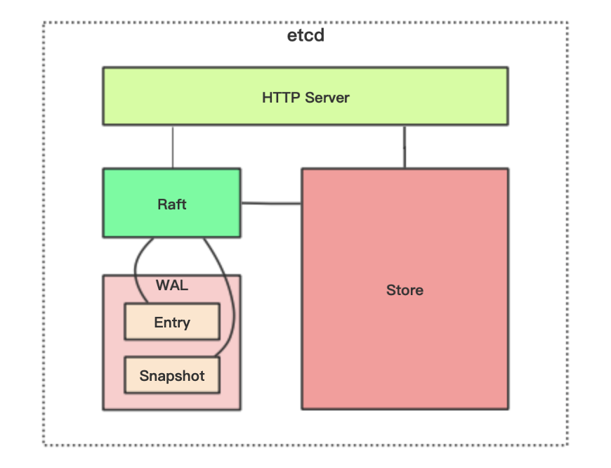
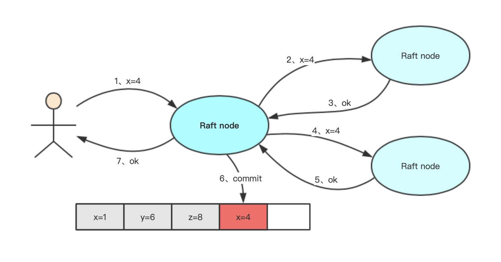
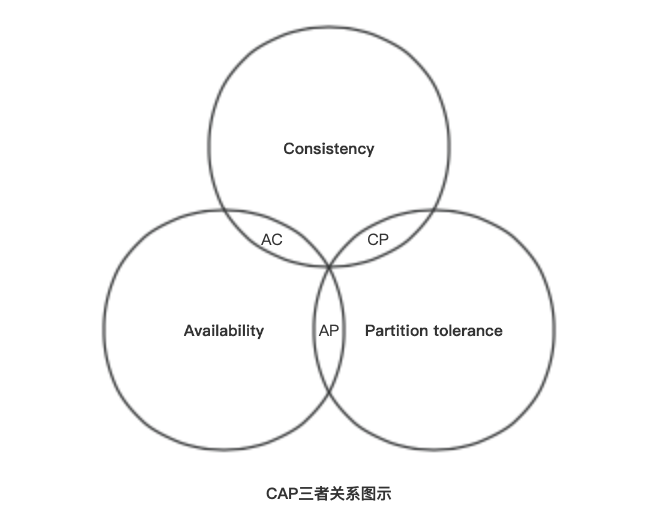

CoreOS团队于2013年6月发起的开源项目。
etcd是一个高可用的 Key/Value 存储系统，主要用于共享配置和服务发现。基于Go语言实现。
类似的常见的有Consul、ZooKeeper等等。
总结下来就是：分布式、高可用、强一致性
在分布式系统中，各个服务的配置信息的管理共享和服务发现是一个很基本、也是很重要的问题。
etcd可以集中管理配置信息，服务端将配置信息存储于etcd，客户端通过etcd得到服务配置信息，etcd监听配置信息的改变，发现变更通知客户端。
为了防止单点故障，还可以启动多个etcd组成集群。etcd集群使用Raft一致性算法处理日志复制，保证多节点之间数据的强一致性。
在etcd中注册服务，并且对注册的服务配置key的TTL，定时保持服务的心跳以达到监控健康状态的效果。
通过在etcd指定主题下注册的服务，也能在对应的主题下查找到。
为了确保连接，我们可以在每个服务机器节点上都部署一个proxy模式的etcd，这样就可以确保访问etcd集群的服务都能够互相连接。
参考：https://www.jianshu.com/p/372e76a27cc3

etcd主要分为四部分：
为了保证高可用，可以使用多个节点组成集群。通常是3个及以上的单数节点。比如集群有3个节点，那么可以容忍其中一个出现故障（半数以上节点是健康的），系统依旧可以正常运行。

上图是正常工作状态的三节点Raft集群：
1、一个Raft集群有一个Leader节点，其余都是Follower节点
2、客户端只允许和Leader节点进行交互
3、Follower节点只允许从Leader节点接收日志数据
4、Leader节点将客户端发来的请求同步给所有Follower节点，至少有一半节点同步成功时，才可以将日志commit，并返回给客户端成功
5、Leader节点定期向Follower节点发送心跳信息，告诉Follower自己依然健康
Raft关键在于抽屉理论，二阶段提交，选举约束，一共3个部分
又称大多数协议，举个例子：假设有5个人，把一个秘密分享给其中3人，那么随机挑选3个人，至少有1个人知道这个秘密！
假设集群节点数为2N+1，leader处理请求分4步：
上述操作先执行复制，再广播提交，对于follower们就是2阶段。
一句话概括：如果一共有2n+1个节点，有大多数follower(n+1)复制完leader就给调用者返回，之后leader再异步通知follower完成提交
如果Leader节点由于异常原因无法提供服务了，这是会从Follower中选举新的Leader。从Follower的角度来看，当它接收不到Leader节点的心跳时，就可以认为Leader节点不在了。
Follower的选举过程如下：
1、节点由Follower变为Candidate，同时设置当前的Term（任期）
2、Candidate节点给自己投一票，同时向其它节点发送拉票请求
3、Follower只能向大于自己term的Candidate进行投票；term相等的情况下，选择记录了最新log的
4、Candidate等待投票结果，可能的结果如下： a）赢得选举，节点状态变为Leader b）其它节点赢得选举，节点状态变为Follower c）本轮选举未产生结果，节点状态保持为Candidate
只有当一个Candidate得到过半的选票时才能赢得选举，每一个节点按照先到先得的方式，最多投票给一位Candidate。
在Candidate赢得选举后，自己变为Leader，同时向所有节点发送心跳信息以使其他节点变为Follower，开始下一任任期。
在等待投票结果的过程中，如果Candidate收到其他节点发送的心跳信息，并检查心跳信息中的任期不比自己小，则自己变为Follower，听从新上任的Leader的指挥。
举个例子：当有多个Candidate同时竞选时，由于每个人先为自己投一票，导致没有任何一个人的选票数量过半。
当这种情况出现时，每一位Candidate都开始准备下一任竞选：将Term+1，同时再次发送拉票请求。为了防止出现长时间选不出新Leader的情况，Raft采用了两个方法：
1、Follower认为Leader不可用的超时时间，是一个随机值，这首先防止了所有的Follower都在同一时刻发现Leader不可用的情况，从而让先发现的Follower顺利当选
2、即使出现多个Candidate同时竞选的情况，再发送拉票请求时，也有一段随机的延迟，来保证大家不是同时发送拉票请求
| 功能特性 | etcd | Consul | zookeeper |
|---|---|---|---|
| 服务健康检查 | 连接心跳 | 服务状态，内存，硬盘等 | (弱)长连接，keepalive |
| 多数据中心 | — | 支持 | — |
| kv存储服务 | 支持 | 支持 | 支持 |
| 一致性 | raft | raft | paxos |
| cap | cp | ca | cp |
| 使用接口(多语言能力) | http/grpc | 支持http和dns | 客户端 |
| watch支持 | 支持 long polling | 全量/支持long polling | 支持 |
| 自身监控 | metrics | metrics | — |
| 安全 | https支持（弱） | acl /https | acl |
| spring cloud集成 | 已支持 | 已支持 | 已支持 |
延伸：CAP原则
CAP原则又称CAP定理，指的是在一个分布式系统中， Consistency（一致性）、 Availability（可用性）、Partition tolerance（分区容错性），三者不可兼得。

| 功能特性 | redis | etcd | zookeeper |
|---|---|---|---|
| 一致性算法 | 无 | raft | paxos |
| CAP | AP | CP | CP |
| 高可用 | 主从 | N+1可用 | N+1可用 |
| 接口类型 | 客户端 | http/grpc | 客户端 |
| 实现 | setNX | restful API | createEphemeral |
实现简单，市面上也有许多的开源框架。但从根本上来说，它并不适合于分布式锁。因为分布式锁从业务场景上来说，是CP的，但Redis是AP的。
redis依靠主从，一旦主节点宕机，数据没有同步到从节点中，会出现再次上锁的问题。如果业务一定需要数据的一致性，在高并发的场景下是不建议选择redis锁的实现
依靠的是创建临时顺序节点和watch监听机制，它的效率和扩展能力都是比较低的，因此，也较少人使用。
不同于Redis，在一致性和集群方面，借鉴了Zookeeper，使得它的集群能力和一致性能力都是比较强的。
在使用方面，又采用restful API这种比较简单的使用方式，有点像ES。其实etcd是比较适合用来做分布式锁的。
151# 获取安装包2wget https://github.com/etcd-io/etcd/releases/download/v3.4.14/etcd-v3.4.14-linux-amd64.tar.gz3
4# 解压5tar -zxvf etcd-v3.4.14-linux-amd64.tar.gz6
7# 移动到常用的安装目录8mv etcd-v3.4.14-linux-amd64 /usr/local/etcd9
10# 后台启动11cd /usr/local/etcd12nohup /usr/local/etcd/etcd --name my-etcd-1 --listen-client-urls 'http://0.0.0.0:2379' --advertise-client-urls 'http://0.0.0.0:2379' &13
14# 查看是否启动成功15less nohup.out| Zone | IP | 同伴通信Port | 对外服务Port |
|---|---|---|---|
| etcd-node-1 | 10.110.2.9 | 2380 | 2379 |
| etcd-node-2 | 10.110.2.10 | 2380 | 2379 |
| etcd-node-3 | 10.110.2.11 | 2380 | 2379 |
411# For node 12docker run \3 -p 2379:2379 \4 -p 2380:2380 \5 --volume=/var/lib/etcd:/etcd-data \6 --name etcd quay.io/coreos/etcd:latest \7 /usr/local/bin/etcd \8 --data-dir=/etcd-data --name etcd-node-1 \9 --initial-advertise-peer-urls http://10.110.2.9:2380 --listen-peer-urls http://0.0.0.0:2380 \10 --advertise-client-urls http://10.110.2.9:2379 --listen-client-urls http://0.0.0.0:2379 \11 --initial-cluster etcd-node-1=http://10.110.2.9:2380,etcd-node-2=http://10.110.2.10:2380,etcd-node-3=http://10.110.2.11:2380 \12 --initial-cluster-state new \13 --initial-cluster-token my-etcd-token14
15# For node 216docker run \17 -p 2379:2379 \18 -p 2380:2380 \19 --volume=/var/lib/etcd:/etcd-data \20 --name etcd quay.io/coreos/etcd:latest \21 /usr/local/bin/etcd \22 --data-dir=/etcd-data --name etcd-node-2 \23 --initial-advertise-peer-urls http://10.110.2.10:2380 --listen-peer-urls http://0.0.0.0:2380 \24 --advertise-client-urls http://10.110.2.10:2379 --listen-client-urls http://0.0.0.0:2379 \25 --initial-cluster etcd-node-1=http://10.110.2.9:2380,etcd-node-2=http://10.110.2.10:2380,etcd-node-3=http://10.110.2.11:2380 \26 --initial-cluster-state new \27 --initial-cluster-token my-etcd-token28
29# For node 330docker run \31 -p 2379:2379 \32 -p 2380:2380 \33 --volume=/var/lib/etcd:/etcd-data \34 --name etcd quay.io/coreos/etcd:latest \35 /usr/local/bin/etcd \36 --data-dir=/etcd-data --name etcd-node-3 \37 --initial-advertise-peer-urls http://10.110.2.11:2380 --listen-peer-urls http://0.0.0.0:2380 \38 --advertise-client-urls http://10.110.2.11:2379 --listen-client-urls http://0.0.0.0:2379 \39 --initial-cluster etcd-node-1=http://10.110.2.9:2380,etcd-node-2=http://10.110.2.10:2380,etcd-node-3=http://10.110.2.11:2380 \40 --initial-cluster-state new \41 --initial-cluster-token my-etcd-token参数说明：
71docker ps -a2
3# 进入其中一个节点4docker exec -it etcd bin/sh5
6# 查看集群成员7etcdctl member list
21$ etcdctl set /dir/key "Hello world"2Hello world支持的选项有： --ttl value 该键值的超时时间(单位为秒)，不配置(默认为0)则永不超时 --swap-with-value value 若该键现在的值是value，则进行设置操作 --swap-with-index value 若该键现在的索引值是指定索引，则进行设置操作
21$ etcdctl get /dir/key2Hello world支持的选项有： --sort 对结果进行排序 --consistent 将请求发给主节点，保证获取内容的一致性。
注意：key不存在时会报错
21$ etcdctl update /dir/key "Hello"2Hello支持的选项有： --ttl value 超时时间(单位为秒)，不配置(默认为 0)则永不超时。
注意：key不存在时会报错
21$ etcdctl rm /dir/key2PrevNode.Value: Hello支持的选项有： --dir 如果键是个空目录或者键值对则删除 --recursive 删除目录和所有子键 --with-value value 检查现有的值是否匹配 --with-index value 检查现有的index是否匹配
注意：key不存在时会报错
mk、mkdir、setdir、updatedir、rmdir等等，具体用法使用命令 etcdctl help 可以查看。
https://etcd.io/docs/v2.3/api/
651package main2
3import (4 "context"5 "fmt"6 "time"7
8 "github.com/coreos/etcd/clientv3"9)10
11func main() {12 // 连接etcd13 cli, err := clientv3.New(clientv3.Config{14 Endpoints: []string{"10.110.2.9:2379", "10.110.2.10:2379", "10.110.2.11:2379"},15 DialTimeout: 5 * time.Second,16 })17 if err != nil {18 fmt.Println("connect failed, error: ", err)19 return20 }21
22 fmt.Println("connect success")23 defer cli.Close()24
25
26 key, value := "/logagent/conf/", "sample_value"27
28 // put写入kv29 putResp, err := cli.Put(context.TODO(), key, value)30 if err != nil {31 fmt.Println("put to etcd failed, error: ", err)32 return33 }34 fmt.Printf("revision: %d, value: %s\n", putResp.Header.Revision, putResp.Header.String())35
36 // get读取kv37 ctx, cancel := context.WithTimeout(context.Background(), time.Second)38 getResp, err := cli.Get(ctx, key)39 cancel()40 if err != nil {41 fmt.Println("get to etcd failed, error: ", err)42 return43 }44 for _, ev := range getResp.Kvs {45 fmt.Printf("%s:%s\n", ev.Key, ev.Value)46 }47
48 // get读取目录下的所有kv49 getAllResp, err := cli.Get(context.TODO(), "/logagent/", clientv3.WithPrefix())50 if err != nil {51 fmt.Println("get all to etcd failed, error: ", err)52 return53 }54 fmt.Println(getAllResp.Kvs)55
56 // delete删除kv57 delResp, err := cli.Delete(context.TODO(), key)58 if err != nil {59 fmt.Println("del to etcd failed, error: ", err)60 return61 }62 fmt.Println(delResp.Deleted)63}64
65
x
112011171package main2
3import (4 "context"5 "fmt"6 "time"7
8 "github.com/coreos/etcd/clientv3"9)10
11func main() {12 // 客户端配置13 config := clientv3.Config{14 Endpoints: []string{"127.0.0.1:2379"},15 DialTimeout: 5 * time.Second,16 }17
18 // 建立连接19 cli, err := clientv3.New(config)20 if err != nil {21 fmt.Println("connect to etcd failed, err: ", err)22 return23 }24
25 fmt.Println("connect to etcd success")26 defer cli.Close()27
28 // lease实现锁自动过期29 // op操作30 // txn事务：if else then31
32 // 1.上锁(创建租约，自动续租，拿着租约去抢占一个key)33 lease := clientv3.NewLease(cli)34 // 创建一个5秒的租约35 leaseGrantResp, err := lease.Grant(context.TODO(), 5)36 if err != nil {37 fmt.Println("lease create failed， err: ", err)38 return39 }40
41 // 拿到租约的ID42 leaseID := clientv3.LeaseID(leaseGrantResp.ID)43
44 // 准备一个用于取消自动续租的context45 ctx, cancelFun := context.WithCancel(context.TODO())46
47 // 确保函数退出后，自动续租会停止48 defer cancelFun()49 defer lease.Revoke(context.TODO(), leaseID)50
51 // 5秒后会取消自动续租52 keepRespChan, err := lease.KeepAlive(ctx, leaseID)53 if err != nil {54 fmt.Println(err)55 return56 }57
58 // 处理续约应答的协程59 go func() {60 for {61 select {62 case keepResp := <-keepRespChan:63 if keepRespChan == nil {64 fmt.Println("租约已经失效了")65 goto END66 } else { // 每秒会续租一次，所以就会收到一次应答67 fmt.Println("收到自动续租应答：", keepResp.ID)68 }69 }70 }71 END:72 }()73
74 // 创建事务75 txn := cli.Txn(context.TODO())76 // if不存在key，then设置它，else抢锁失败77 txn.If(clientv3.Compare(clientv3.CreateRevision("/cron/jobs/job02"), "=", 0)).78 Then(clientv3.OpPut("/cron/jobs/job02", "XXX", clientv3.WithLease(leaseID))).79 Else(clientv3.OpGet("/cron/jobs/job02")) // 否则抢锁失败80
81 // 提交事务82 txnResp, err := txn.Commit()83 if err != nil {84 fmt.Println(err)85 return // 没有问题86 }87
88 // 判断是否抢到了锁89 if !txnResp.Succeeded {90 fmt.Println("锁被占用：", string(txnResp.Responses[0].GetResponseRange().Kvs[0].Value))91 return92 }93
94 // 2，处理业务95 fmt.Println("处理任务")96 time.Sleep(5 * time.Second)97
98 // 3.释放锁(取消自动续租，释放租约)99 // defer 会把租约释放掉，关联的KV就被删除了100
101}102
103/*104终端一105$ go run etcd-lock.go106connect to etcd succ107处理任务108收到自动续租应答： 522271907470425639109收到自动续租应答： 522271907470425639110收到自动续租应答： 522271907470425639111
112终端二113$ go run etcd-lock.go114connect to etcd succ115锁被占用： XXX116收到自动续租应答： 522271907470425642117*/